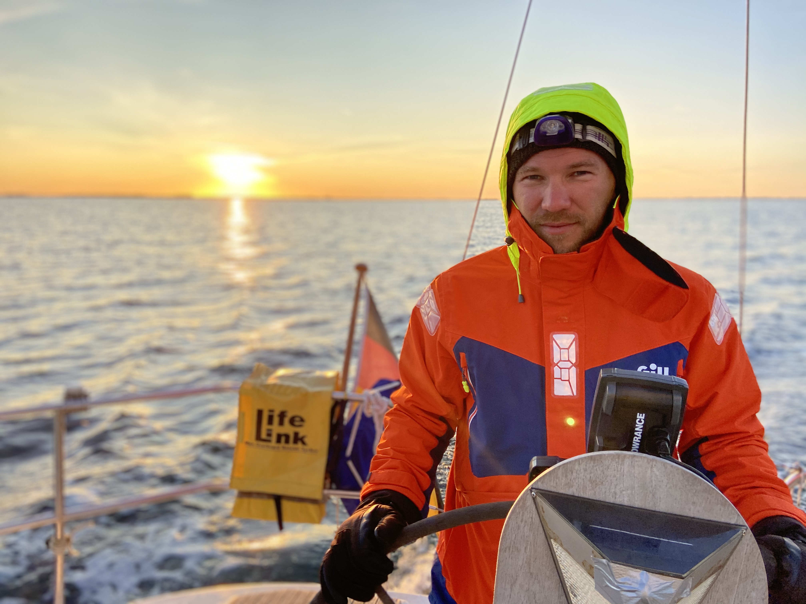

Leadership & Career Pivots
When you are stepping into a bigger role, reconsidering your next move, or hitting a leadership plateau where yesterday’s playbook no longer fits.
Two disciplines, one standard:
calm clarity, real accountability, and steady hands under pressure.

At first glance, leading an offshore passage and coaching senior leaders or teams belong to different worlds. In practice, both test the exact same thing: how clearly you see reality when conditions shift and how steadily you help others move forward.
Since 2005, I have led complex teams and supported leaders and organisations through change—including agile transformations across companies such as McKinsey & Company, Raiffeisenbank, CETIN, Deloitte, and MallGroup. Alongside that work, the sea and wind have kept me grounded in real consequences, clear roles, and honest preparation.
When you are stepping into a bigger role, reconsidering your next move, or hitting a leadership plateau where yesterday’s playbook no longer fits.
When alignment, ownership, or decision-making slows down inside a growing company, leadership team, or agile transformation.
When you want calm seamanship, structured briefings, and reliable watchkeeping on offshore passages—whether for a private crew or a team on the water.
No buzzwords, no rigid scripts, and no theory for its own sake. We look at what is actually happening, separate noise from signal, and focus on what moves things forward.
In coaching and team work, I draw on structured conversation and established diagnostic tools—such as HEXACO PI-R, Gallup CliftonStrengths, and Hogan—to turn insight into concrete action.
Whether briefing a crew before nightfall or preparing a leader for a high-stakes decision, clarity is built before the storm hits—not improvised in the middle of it.
Every conversation or passage ends with shared expectations, clear ownership, and a practical check on whether what we agreed actually works.
QED Group (2016–2017)
ICAgile ICP-ACC, PAL, PSM I & PSPO
Emotional Skills & Credibility (2016)
Commercial Endorsement in progress
GMDSS radio & marine first aid
Inland & Sea — Unlimited sail & motor
Not sure whether you need a coaching conversation, a sea passage, or simply a sounding board? Book a free 30-minute call and we will see where it leads.